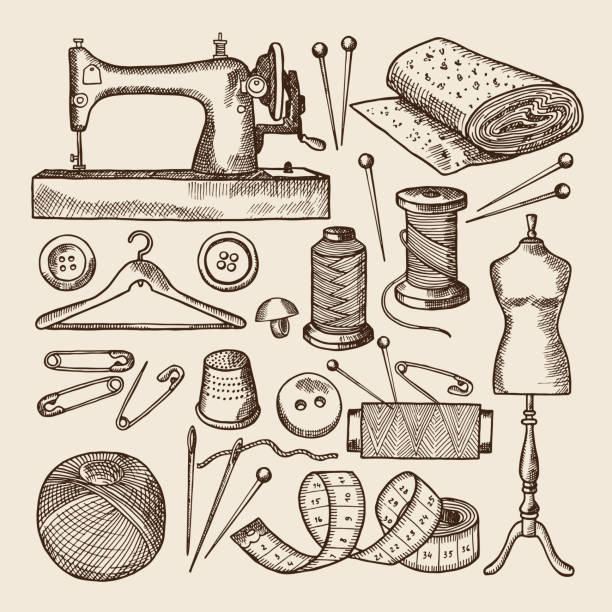
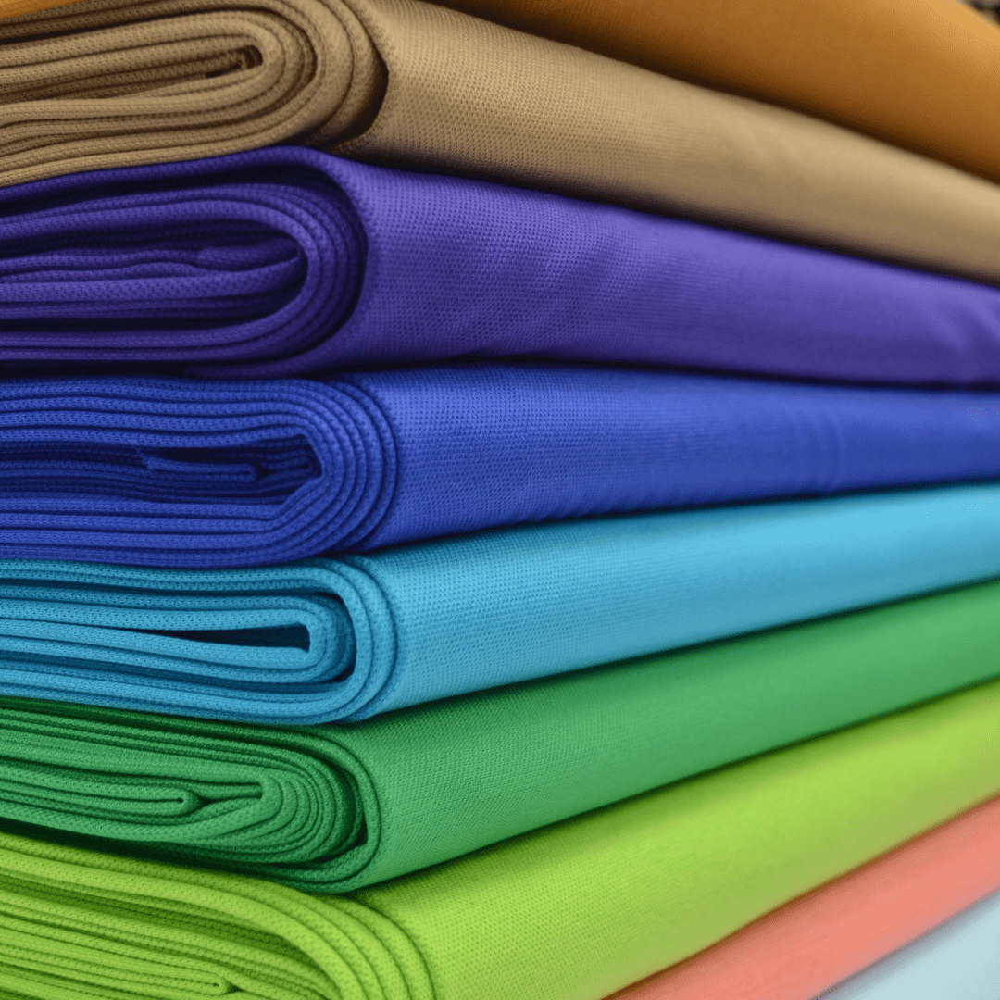
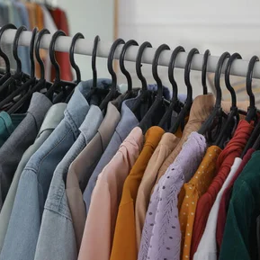
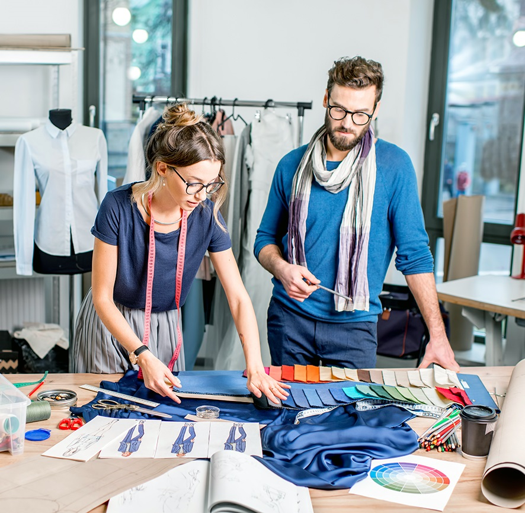

История

История нашего ателье началась с простой мечты: вернуть индивидуальному пошиву его истинную ценность. Мы открылись более десяти лет назад, вдохновившись традициями классических швейных мастерских, где к каждому стежку относились с особым трепетом. С первых дней нашей работы мы поставили перед собой задачу — создавать одежду, которая не просто идеально сидит по фигуре, но и отражает характер своего владельца. За эти годы маленькая мастерская выросла в профессиональное ателье, сохранив при этом уютную атмосферу и персональный подход к каждому гостю.
Сегодня мы объединяем проверенные временем техники с современными технологиями кроя. Наша история — это тысячи успешно реализованных образов, от строгих деловых костюмов до роскошных вечерних нарядов. Мы гордимся тем, что многие клиенты остаются с нами на протяжении многих лет, доверяя нам создание своего уникального стиля. Для нас пошив одежды — это не просто работа, а искусство, в которое мы вкладываем душу и многолетний опыт нашей команды мастеров.
Наши качества

Материалы
Мы тщательно отбираем материалы, чтобы каждое изделие — будь то строгий пиджак или сложный сценический образ — служило долго и выглядело премиально. В нашей работе классическое сукно, натуральный шелк и мягкий кашемир соседствуют с технологичным неопреном, фактурным винилом и специализированным мехом. Такой широкий охват позволяет нам не ограничивать себя рамками одного стиля: мы одинаково мастерски работаем как с деликатными тканями для повседневной элегантности, так и с износостойкими материалами для детализированного косплея.
Особое внимание уделяется качеству основ и фурнитуры, ведь долговечность вещи скрыта в деталях. Для костюмов мы выбираем дышащие подкладки и надежный приклад, а для фантазийных проектов — легкие наполнители и прочные каркасные материалы, которые сохраняют форму даже при активном движении. Мы постоянно ищем редкие фактуры и современные полотна, чтобы воплотить в жизнь любую идею, превращая эскиз в осязаемый шедевр из лучших материалов.
Изделия и Услуги
Мастерство наших специалистов позволяет работать в самых разных направлениях — от строгого этикета до безграничной фантазии. Мы специализируемся на индивидуальном пошиве мужской и женской одежды, создавая безупречные деловые костюмы, элегантные платья и верхнюю одежду, которая идеально садится по фигуре. При этом наше ателье является уникальной площадкой для воплощения неординарных идей: мы профессионально проектируем сложные косплей-образы и изготавливаем высокохудожественные фурсьюты. Каждый такой проект для нас — это сочетание инженерного подхода к каркасам и тонкой художественной работы с деталями.
Помимо создания изделий «под ключ», мы предлагаем услуги по профессиональной стилизации и технической доработке ваших идей. Это включает в себя разработку сложных конструкций, подбор специфических материалов и адаптацию эскизов под реальную эксплуатацию. Независимо от того, нужен ли вам классический образ для важной встречи или детализированный костюм для фестиваля, мы обеспечиваем полный цикл производства: от снятия мерок и создания лекал до финальной отделки, гарантируя исключительное качество в каждом из направлений.
Подробнее с предоставляемыми услугами можно ознакомиться на странице >> Услуги <<


Наши мастера
Сердцем нашего ателье является сплоченная команда профессионалов, объединившая опытных портных классической школы и креативных мастеров по созданию сложных конструкций. Наши закройщики обладают безупречным чувством линии и формы, что позволяет добиваться идеальной посадки как в строгом мужском костюме, так и в специфических элементах фурсьютов. Каждый мастер — это не просто исполнитель, а эксперт с глубоким знанием технологий обработки самых разных материалов, от тончайшего шелка до высокотехнологичных полимеров и густого меха.
Мы верим, что создание уникального изделия требует не только технических навыков, но и искренней страсти к своему делу. Наши специалисты постоянно совершенствуются, осваивая как традиционные ручные стежки, так и инновационные методы моделирования сложных сценических образов. Благодаря сочетанию многолетнего опыта и открытости к смелым экспериментам, наши мастера способны найти техническое решение для самой амбициозной задумки, гарантируя при этом долговечность и комфорт каждого сшитого изделия.